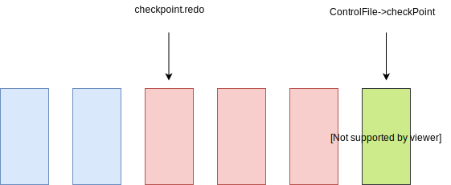

前言
postgresql 的 checkpoint 是数据库中非常重要的部分，它涉及到数据库的缓存，持久化与数据恢复各个方面。它在执行时会涉及到大量磁盘 IO，所以对于它的优化和监控是不可缺少的。此篇文章讲述了 checkpoint 的原理及其监控，这对调优会有很大的帮助。
Checkpoint 简介
postgresql 会将数据持久化到磁盘里，不过因为磁盘的读写性能比较差，所以又添加了一层缓存。这样每次的数据读写都会优先在缓存中处理，如果数据不存在缓存中，才会从磁盘查找。虽然这样很大的提升了性能，但是缓存不具有磁盘的持久性，在机器断电时就会丢失。
postgresql 为了解决这个问题，结合了磁盘顺序写的特点，引入了 wal 日志机制。当每次数据修改时，还会记录一条日志存储在 wal 文件里，日志包含了此次修改的数据。wal 数据采用添加写的方式，能够充分利用顺序写高效的特点。这样即使数据库意外退出，也能利用 wal 来恢复数据。
当数据库重启时，只需要重放之前所有的wal 日志。不过 wal 日志随着时间的积累会变得非常大，会导致恢复的时间很长。针对这个问题，postgresql 提供了checkpoint 机制，会定期将缓存刷新到磁盘。数据的恢复也只需要从刷新点开始重放 wal 日志，并且之前的 wal 日志就不再有用，可以被回收。
触发条件
checkpoint 的触发条件分为下面多种。
时间触发：后台 checkpoint 进程会定时检查时间，如果距离上次 checkpoint 执行开始时的间隔超过了指定值，就会触发 checkpoint。这个指定值是配置文件的checkpoint_timeout 值，范围在 30s ~ 1 day，默认值为300s。
wal日志：当最新的 wal 日志，和上次 checkpoint 的刷新点的距离大于指定值，就会触发 checkpoint。触发值的大小在下面介绍checkpoint_complete_target会提到。
手动触发：当用户执行checkpoint命令也会触发，这个命令必须由超级用户才能执行。
数据库关闭：当数据库正常关闭时，会触发一次 checkpoint 。
基础备份：当进行数据基础备份时，会执行pg_start_backup命令，触发 checkpoint。
数据库崩溃修复：数据库异常退出后，比如数据库进程被kill -9，来不及清理操作 。在重新启动时，会进行崩溃修复，修复完成后会触发 checkpoint。
监控
对于 checkpoint 的监控，推荐监听日志的方式，它会详细的记录了每次 checkpoint 的信息。需要在postgresql.conf配置文件里设置 log_checkpoints=on，这样就会每次执行 checkpoint 时，在开始和结束的时候，都会打印相关的信息。
checkpoint 开始时的日志，会记录 checkpoint 的触发原因和其余的标记位。比如下面的日志表示由于超时触发
|
|
checkpoint 结束时的日志，记录此次的刷新缓存的数目，使用时间，wal segment 文件的变化数等。
|
|
除了监听日志的方式，pg_stat_bgwriter 视图存储了 checkpoint 的统计数据，它只有一行数据，会动态更新。下面展示了与 checkpoint 相关的列
| Column | Type | Description |
|---|---|---|
checkpoints_timed |
bigint |
因为时间触发的次数 |
checkpoints_req |
bigint |
其他原因触发的次数 |
checkpoint_write_time |
double |
缓存刷新到文件系统cache的花费时间 |
checkpoint_sync_time |
double |
缓存对应的文件系统cache刷新到磁盘的花费时间 |
buffers_checkpoint |
bigint |
buffer刷新到磁盘的数目 |
buffers_backend |
bigint |
checkpoint收到sync 请求次数 |
buffers_backend_fsync |
bigint |
后台因为发送sync请求失败，需要自身执行fsync操作的次数 |
stats_reset |
timestamp |
更新时间 |
Checkpoint_complete_target 配置项
这里需要详细的介绍checkpoint_complete_target配置项，它在 checkpoint 优化时比较重要，同时也比较复杂。我们知道 checkpoint 执行时会占用系统资源，尤其是磁盘 IO，所以为了减少对系统的影响，会进行 IO 限速。如果开启了checkpoint_complete_target配置，那么此次 checkpoint 不需要立即完成，它会将完成时间控制在checkpoint_timeout_ms * checkpoint_complete_target。这样磁盘 IO 就可以平缓的运行，将其控制在一定的影响范围之内。
如果 checkpoint 不能立即完成，那么旧有的 wal 日志也就不能立即删除。因为max_wal_size规定了 wal 日志的最大值，那么我们需要将由于 wal 过大而引起 checkpoint 的触发值调低，因为在执行 checkpoint 的时候吗，同时会有新的 wal 日志产生。那么显而易见，到达 wal 日志大小的顶峰是checkpoint 即将完成的时刻，因为这时包含了此次触发的wal 日志，加上新增的 wal 日志。假设触发值为trigger_wal_size，那么checkpoint_timeout时间内，wal 日志新增的大小最多为trigger_wal_size。我们假设 wal 日志的增长速度是相同的，那么此时增长的 wal 日志大小为trigger_wal_size * checkpoint_completion_target。为了保证顶峰时刻，wal 日志大小等于max_wal_size，可以计算出触发值
|
|
当然为了保证完成的时间在checkpoint_timeout_ms * checkpoint_complete_target，在执行缓存刷新到文件时，需要进行限速。限速的细节在下面会有介绍到。
Checkpoint 进程
postgresql 会创建出一个后台进程，负责处理 checkpoint 。
checkpoint 进程会定期检查是否满足时间触发条件，还会检查是否有来自其它进程发送的请求。比如数据库崩溃修复是由 recovery 进程负责，在恢复成功后，会发送checkpoint请求在共享内存里。checkpoint 进程定期检查到有请求就会处理。
graph LR
other_process[其它进程]
share[共享内存]
checkpoint_process[checkpoint进程]
other_process --> share
share --> checkpoint_process
checkpoint 请求
checkpoint 请求只是由一个 int 类型变量表示，名称为ckpt_flags。它是作为标记位，其中的位对应了不同的触发原因
|
|
Checkpoint 锁
每次执行 checkpoint 前，都需要获取互斥锁CheckpointLock ，在完成后会释放锁。这样任何时刻只有一个 checkpoint 操作在执行。
刷新脏页
在获取锁之后，checkpoint 进程会将缓存的数据刷新到磁盘。
1.会去遍历所有的数据缓存页，如果该页包含dirty和pernament标记位，就会添加一个checkpoint_need标记位，然后将其保存到一个链表。
2.这些链表的缓存都需要刷新到磁盘，postgresql 为了利用磁盘顺序写的速度，会将这些缓存按照其对应的磁盘位置进行排序。
3.将排序后的缓存，依次刷新到磁盘，并且清除dirty、pernament和checkpoint_need标记位。
刷新限速
postgresql 会尽量保证刷新缓存的时间控制在checkpoint_timeout_ms * checkpoint_complete_target左右，下面计算了在此时应该完成的百分比。在每刷新一个缓存页时，就会比较当前进度。如果比timeout_progress快，则需要休眠一会儿。如果比它慢，则不会休眠。
|
|
同样对于 wal 大小增长超过了trigger_wal_size，也会触发 checkpoint。postgresql 会实时查看 wal 的新增大小，确保缓存刷新速度要大于 wal 日志增长速度。我们允许 checkpoint 完成时，日志增长的大小不能超过trigger_wal_size * checkpoint_complete_target 。那么日志增长的进度为
|
|
每当刷新一个buffer后，就会更新其进度progress = buffer_processed_num / buffer_to_process_total。然后比较progress和timeout_progress、wal_progress的大小，如果都达到了进度要求，那么会停顿一段时间来降低刷新速度。这种方式能让 checkpoint 造成的系统影响降到最低。
磁盘刷新
注意到上一部只是将 postgresql 的缓存刷新到了文件系统，还不能保证数据持久化到磁盘，因为文件文件系统本身也会有缓存的存在。
当刷新一个buffer时，postgresql 就会发送sync请求。checkpoint 执行中会处理这些 sync 请求，会将这些文件系统 cache 刷新到磁盘。
生成 checkpoint wal 日志
在磁盘刷新完之后，postgresql 会生成一条 wal 日志，里面记录了此次 checkpoint 的信息。它的信息比较多，包含了当前事务ID 的信息（当前最大事务ID，最小事务ID，事务时间，事务frozen等），下面只是介绍了其中一些字段
|
|
这里需要注意下 redo 成员，每次数据库恢复，都会从此位置开始重放 wal 日志。
更新 pg_control 文件
pg_control文件保存了重要的信息，数据库的启动会利用到
|
|
删除旧有 wal 日志
在checkpoint.redo位置前的wal日志，对应的数据修改已经保存到了磁盘，所以这部分的wal日志就可以被删除或者回收。在删除或者回收之前，还需要检查这些 wal 日志有没有被归档成功（如果开启了 archive），还会检查从库是否收到了这些 wal 日志（如果开启了流复制）。
这里的回收并不等于删除，它只是将文件进行重命名了，文件名等于下个 wal segment 的名称。
检查归档超时
如果开启了 wal archive，那么这里还会检查 archive 超时。本来 wal 日志达到了一定大小，默认为16MB，才会触发归档。但是如果数据的修改比较慢，这样wal 日志大小达到16MB的时间就会比较长。而 wal 归档一般用于增量备份或者从库运行，如果长时间没得到更新，就会使备份的时间间隔大。为了解决这个问题，postgresql 提供了archive_timeout设置，保证触发归档的超时时间。
检查点
每次 checkpoint 开始时，都会记录当前最新的 wal 日志位置，称作为检查点（redo）。当数据库恢复时，会从检查点开始回放 wal 日志。
上图左边的蓝色方块，代表着 checkpoint 开始的 wal 数据。因为 checkpoint 并不会影响用户请求，所以之后的红色方块代表着之后的请求。
postgresql 在修改缓存时，会记录对应的 wal 日志，所以 checkpoint 完成后，这些蓝色的 wal 日志对应的修改，就能确保已经持久化到磁盘了。
checkpoint 完成后，会将检查点的位置记录下来，保存到 checkpoint wal 日志中。为了方便数据库恢复时，快速找到 checkpoint 的数据，会将它的位置存储到 pg_control 文件。
这里额外提一下，会涉及到数据恢复时的概念。假如下面这种情况，当一个 buffer 对应的数据，在checkpoint开始后，刷新到磁盘之前时，用户执行了一条 insert 请求，修改了这个 buffer 的数据。
假设该数据库发生崩溃，在恢复时，从检查点开始。它会首先从磁盘读取数据 data b，然后遇到 insert 语句对应的 wal 日志，它需要知道该 wal 日志对应的修改，已经成功持久化了，不然就会发生恢复错误。
这里需要介绍下 buffer 的头部，它有个特殊的属性pd_lsn，表示最后一次修改对应的 wal 日志位置。它在执行恢复时，会首先检查pd_lsn和该 wal 日志的位置，如果发现了pd_lsn大，那么就会忽略掉此 wal 日志。这样就不会发生恢复错误了。